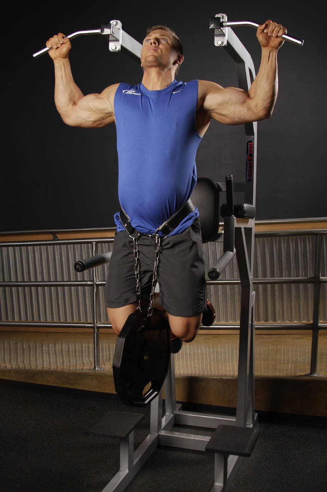

- Attach a weight to a dip belt and secure it around your waist. Grab the pull-up bar with the palms of your hands facing forward. For a medium grip, your hands should be spaced at shoulder width. Both arms should be extended in front of you holding the bar at the chosen grip.
- You'll want to bring your torso back about 30 degrees while creating a curvature in your lower back and sticking your chest out. This will be your starting position.
- Now, exhale and pull your torso up until your head is above your hands. Concentrate on squeezing yourshoulder blades back and down as you reach the top contracted position.
- After a brief moment at the top contracted position, inhale and slowly lower your torso back to the starting position with your arms extended and your lats fully stretched.